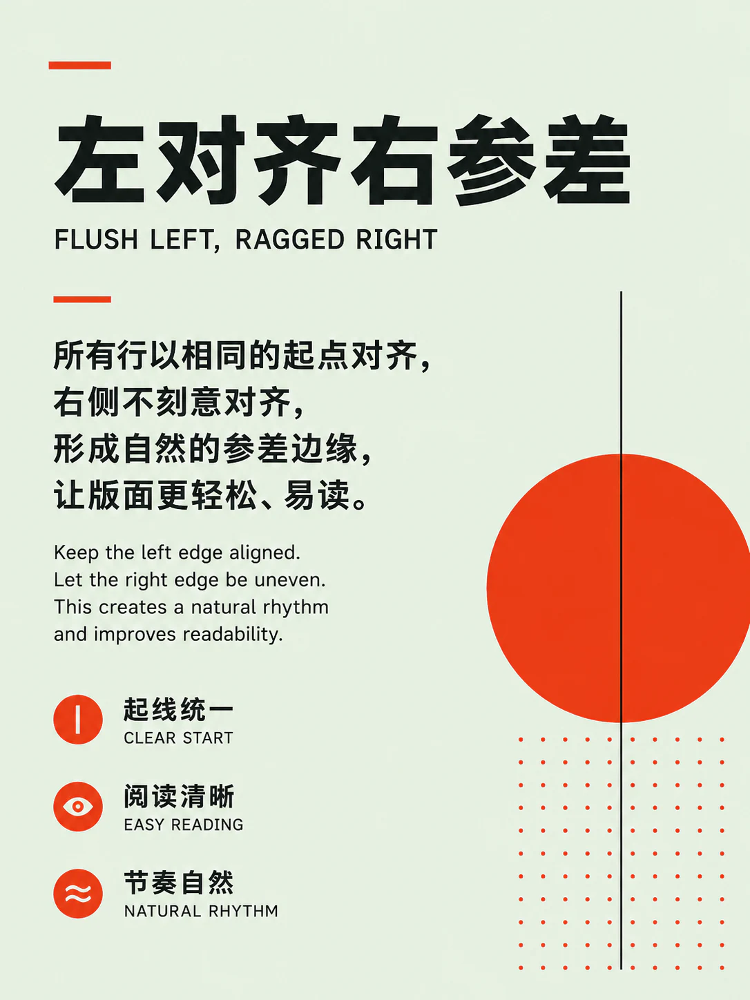

所有行以相同的起点对齐，
右侧保留克制的交替，
字距词距从头到尾匀称，
目光沿左轴轻松滑下。
行尾长短轻微交错，像舒缓的海岸线，呼吸自然、重心稳定。
FLUSH LEFT, RAGGED RIGHT
THE RETURN SWEEP & EVEN WORD SPACING
左对齐右参差之所以成为当代网页、说明书与编辑版面的主力排法，靠的不是审美惯性，而是两件非常具体的眼动生理机制。
第一是回扫锚点（Return Sweep）。阅读横排文字时，眼睛每读完一行都要做一次长距离斜向回跳，去寻找下一行的开头。Keith Rayner、Jens Hofmeister 及 Adam J. Parker 等人的眼动研究指出（Parker, Slattery & Kirkby, 2019），这种长距离回扫极易发生「欠扫（undershoot）」，随后再补一次微小的纠正眼跳。左起线笔直统一，等于给眼球钉住了一堵看不见的靠山墙——大脑无需每行重新测算落点；而右侧参差不齐，则让每一行拥有独一无二的尾形，悄悄提醒眼睛「你刚才读到的是哪一行」，避免漏行或重读。
第二是词距恒定。不强迫右边线对齐，排版系统就不必把多余白空硬灌进单词或汉字之间，行内灰度均匀平和。与之相对，把参差留给左侧的是 177 右对齐左参差，左右皆参差的是 178 居中排版，把右侧强行拉齐的是 179 两端对齐 与 180 强制两端对齐——它们各有专场，却都以牺牲固定左起线或均匀词距为代价。
SHAPING A GOOD RAG · HARD RAG CRAFT
把对齐设为「左对齐」只是起点，真正决定版面高级还是粗糙的，是右侧那条轮廓线的形状。经验里，好参差呈「长—略短—长—略短」的温和波浪（非末行起伏大致落在 10%–25% 之间）；软件听之任之时，最常冒出缺口、斜坡和孤词尾巴。Robert Bringhurst（1992）更建议采用「硬参差（Hard Rag）」——保持词距恒定，不让算法偷偷拉宽空格或滥用连字符；若实在需要英文断字，行尾至少留 2 字母、带走至少 3 字母，且连续连字符不超过 3 行。
行尾长短轻微交错，像舒缓的海岸线，呼吸自然、重心稳定。
解法：微调栏宽，或在长词前一行手工轻推一个短词补平凹坑。
解法：打断单调增减趋势，让中间某行回弹变长，恢复波浪节奏。
解法：从倒数第二行轻推一两个短词到末行，或微调栏宽消尾。
CJK SQUARE GRID VS. MIXED-SCRIPT REALITY
原海报说「右侧不刻意对齐，让版面更轻松、易读」，这对不等宽、靠空格分词的拉丁文几乎处处成立；但按 W3C《中文排版需求（CLREQ）》所述，纯汉字天生等宽成方格，在足够宽的书页里采用 179 两端对齐（常配 186 首行缩进 与 187 凸排标点）本来就能严丝合缝，并不会凭空裂出大河流。真正让中文排版立刻倒向「左对齐右参差」的分水岭，是中英混排、长数字网址，以及手机与侧栏的窄栏面——同时在目录列表与多栏对齐里，它常与 185 悬挂缩进、188 基线对齐、193 水平文字排版 协同工作。
WHERE IT CAME FROM · 1928 TO WCAG
现代意义的「左对齐右参差」并非技术偷懒的产物，而是 20 世纪排印师主动向僵化中轴与强拉词距宣战的结果——它与 181 非对称字体排版 同源而生，最终被写入 Web 无障碍标准。
《新排版术》（Die neue Typographie）
WHEN NOT TO USE FLUSH LEFT
左对齐右参差极其好用，却绝不是万能钥匙。遇到下面四类版面目标时，硬套左对齐反而会拆台——同时若涉及绕图与造型排字，也可交给 182 轮廓绕排、183 矩形绕排、184 跨栏标题、189 形状文字、190 图形诗排版、191 路径文字 或东亚传统 192 垂直文字排版。
TYPOGRAPHY EYE CHECK · PRACTICE
ORIGINAL POSTER · NO. 176

FLUSH LEFT, RAGGED RIGHT
所有行以相同的起点对齐，右侧不刻意对齐，形成自然的参差边缘，让版面更轻松、易读。
Keep the left edge aligned. Let the right edge be uneven. This creates a natural rhythm and improves readability.
整张海报用极其克制的浅鼠尾草绿纸底（#E6F0E1）、墨黑文字与瑞士朱砂橘红（#EA3D16）搭出骨架：左侧全部文字块与三枚红圆徽死死锁在同一根隐形左起线上，右侧任由中英两段宣言长出舒展的参差阶梯；右下方那颗朱红实心巨圆配 10×11 红点阵被一根极细的垂直墨黑轴线贯通，正好呼应「以笔直单轴立秩序，以有机留白生韵律」的核心主张。